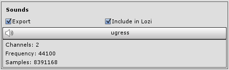
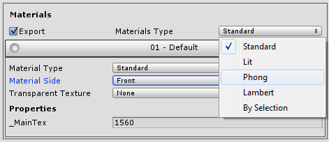
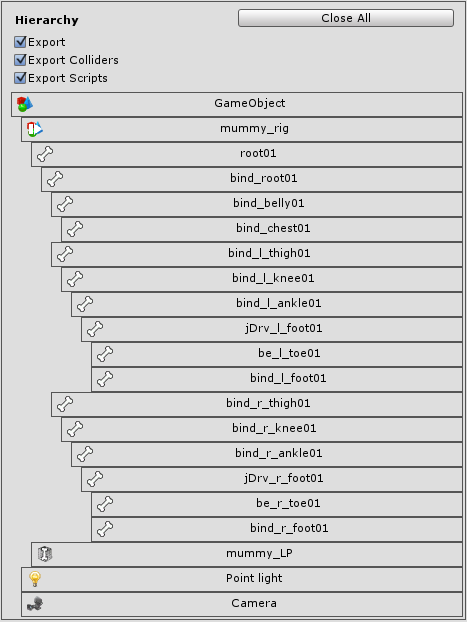
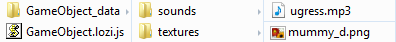

Lozi
Export from Unity3D to WebGL
How To
- Download Lozi archive from page
- Unzip downloaded archive and add Lozi-Exporter.dll into unity project Assets folder
-
Before exporting make sure your skinned mesh has correct mesh root bone attached, remove any kind of gameobject, gun or sword for example because SkinnedMeshRenderer mostly doesn't provide correct amount of bones and Lozi will treat every gameobject inside of root as a bone
How it should be in SkinnedMesh Hierachy:
Gameobject
|
skinnedMesh
root Bone
|
Bone1...
Bone2...
Bone3...

-
At this time Lozi supports only one material per mesh

-
If you have material with reflection use legacy cubeMap and add 6 skybox textures to cubeMap

-
Currently Lozi only supports Legacy animations, to enable legacy animation choose mesh/rig/legacy, after that choose hierarchy gameobject and add animation clips


-
Now hit Tools/Lozi Exporter and you can choose export whole scene or specific gameobject

-
After choosing desired object you can click on advanced dropdown button and new view show up, Lozi uses same meshes, materials, textures and animations for gameobjects with same resources and utilizes as one chunk of data
You can choose what to export, for example if in animations panel export checkbox is unchosen animations will not be exported, same goes to other panels

-
If we click on animation item in animation panel you can inspect which clips are going to export
 -
In textures panel if Include in Lozi is checked every texture will be converted to base64 and saved with lozi file, else it will create folder with textures near exported lozi file
you can change texture size in unity and Lozi will export in resolutions you choose
 -
You can choose material type for all materials or click on material item and choose type for material individually
In item dropdown every material property show up if it has a value assigned, if you have lightmaps baked, and mesh renderer uses lightmaps, it will show up in material properties list
You can choose texture for opacity map in transparent texture field, only texture properties of material will be available if they aren't empty

-
In meshes panel on item click you can choose advanced options for mesh
 -
In Hierachy panel you can view whole hierarchy of object, to close or open permanently use Close All/Expand All Button
Because of Unity3D uses Axis order ZYX and WebGL Engines mostly use XYZ axis order you can use flip exported objects, if flip checked only first object will be flipped
By default Flip X is checked

-
That's it! now click on "Select path" and choose desired destination, than click EXPORT
 -
After exporting you need a web serever
In html include Lozi.js after you include three.js library
Set up three.js with scene, camera and lights(if you don't included lights in exported package)
than use this simple function to load lozi package:
var loziobject; Lozi.load('your_awesome_thingy.js',function(obj) { loziobject = obj.object; scene.add(loziobject); }, onProgress, onerror);
returned object "obj" contains 2 parameters:
- object - Generated Object which extends engines object by type
- data - data object which includes everything from generated geometries to downloaded texturesand that's it, now you can view your exported object if you done everything right
Every engine differs, every exported mesh with texture will be exactly same as in unity3D but difference may be huge in lighting, so take time and make experiments to change material types and light variables